Create a plot to compare the metrics calculated with backtest_metrics()
Usage
# S3 method for class 'backtest_metrics'
plot(x, ..., metric = "wis", horizons = 0, datesbrakes = NULL, title = NULL)Arguments
- x
results of calls to
backtest_metrics()- ...
further arguments passed to the generic plot function.
- metric
the metric to display. Specify only one. Default = "wis"
- horizons
vector of horizons for which the metrics be calculated. Default is to calculate metrics only for horizon 0 (the nowcast).
- datesbrakes
A string giving the distance between x-axis breaks if not specified, one label per bar. Other valid examples are: "2 weeks", or "10 years", "sec", "min", "hour", "day", "week", "month", "year", optionally followed by "s".
- title
string to add as a title of the plot
Examples
# These examples require the `scoringutils` package
if (requireNamespace("scoringutils", quietly = TRUE)) {
# Load the data
data(denguedat)
# In this example, we will test two models
now <- as.Date("1990-10-01")
ncast1 <- nowcast(denguedat, "onset_week", "report_week", now = now,
method = "optimization", seed = 2495624, iter = 10)
ncast2 <- nowcast(denguedat, "onset_week", "report_week", now = now,
method = "optimization", seed = 2495624, iter = 10,
dist = "Poisson")
# Run a backtest for each of the models
dates_to_test <- c(as.Date("1990-06-11"), as.Date("1990-06-18"))
btest1 <- backtest(ncast1, dates_to_test = dates_to_test,
min_horizon = -2, model_name = "Classic")
btest2 <- backtest(ncast2, dates_to_test = dates_to_test,
min_horizon = -2, model_name = "Poisson")
# Compare the models to select the best model
comparison <- backtest_metrics(btest1, btest2, horizons = c(-1,0))
# plot the comparison
plot(comparison)
# specify metric and horizons
plot(comparison, metric = "rmse", horizons = c(-1,0))
}
